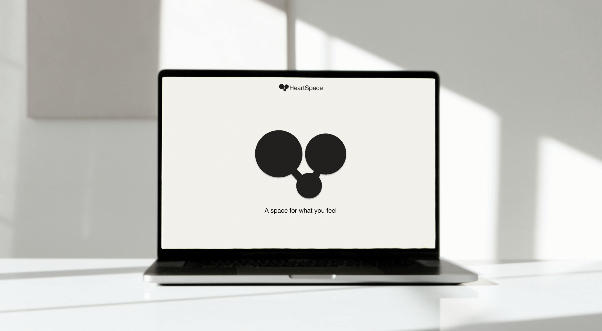
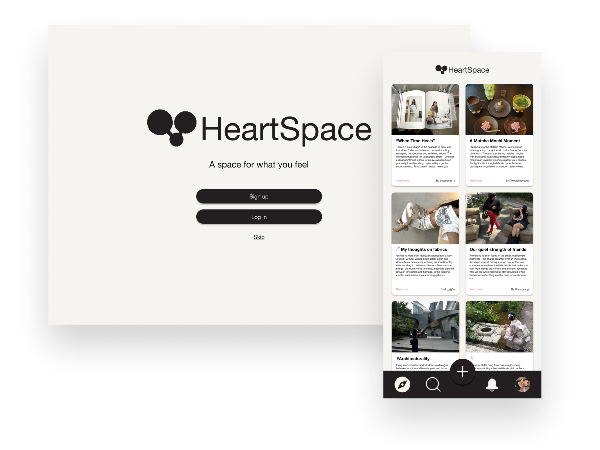
HeartSpace: A Space For What You Feel
- Role
- Interface design, user journey, responsive prototype
- Tools
- Figma
HeartSpace is a responsive multi-device social journaling platform built in Figma. Grounded in user research and a defined user journey, it enables quick note-style posts on mobile, deeper writing on desktop, and lightweight engagement via smartwatch notifications.
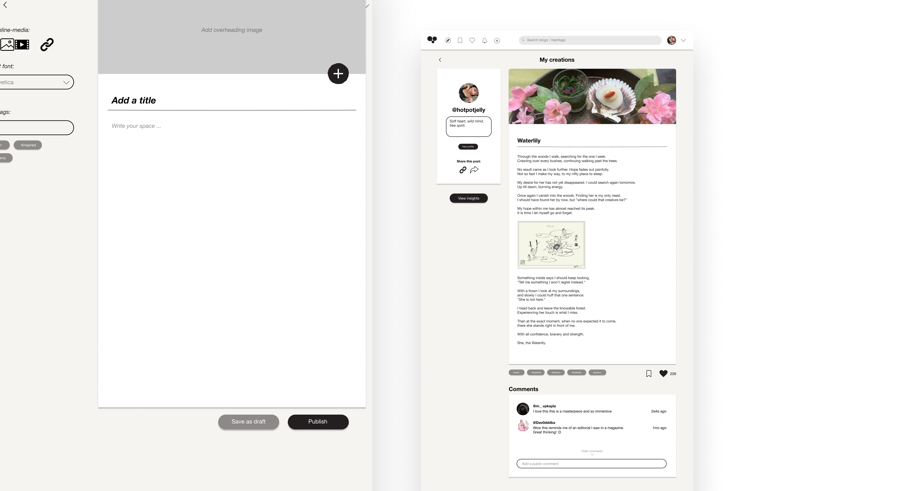
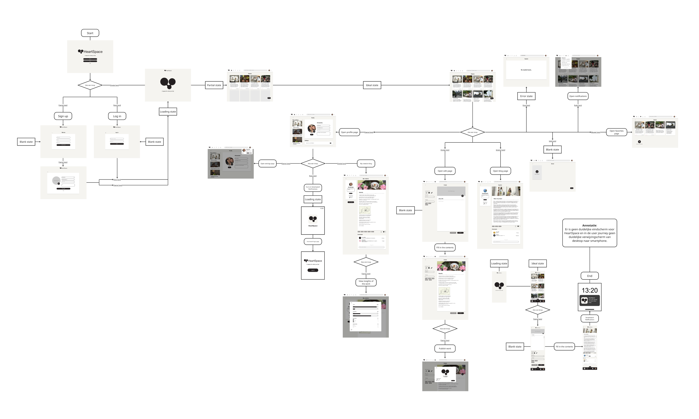

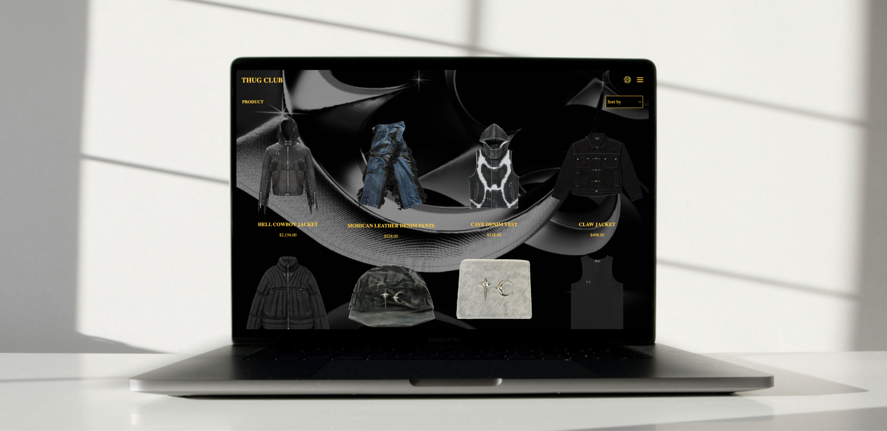
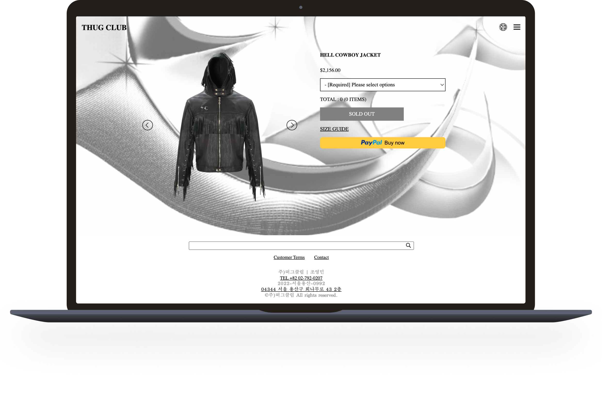
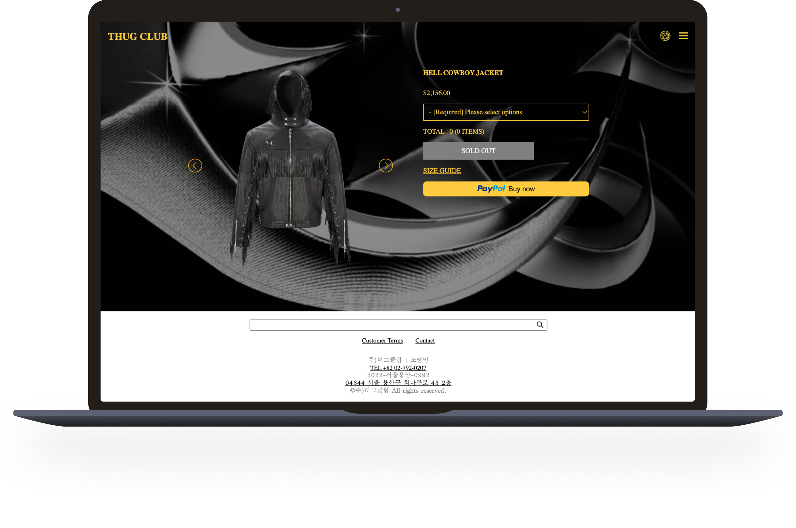
Thug Club Front-end Development
- Role
- Front-end development and accessibility improvements
- Tools
- HTML, CSS, JavaScript
A responsive HTML, CSS, and JavaScript re-designed website developed in VSCode, incorporating research-backed accessibility improvements, including screenreader support.
Features include dark and light mode options, enhanced readability, and clean, maintainable code structure.
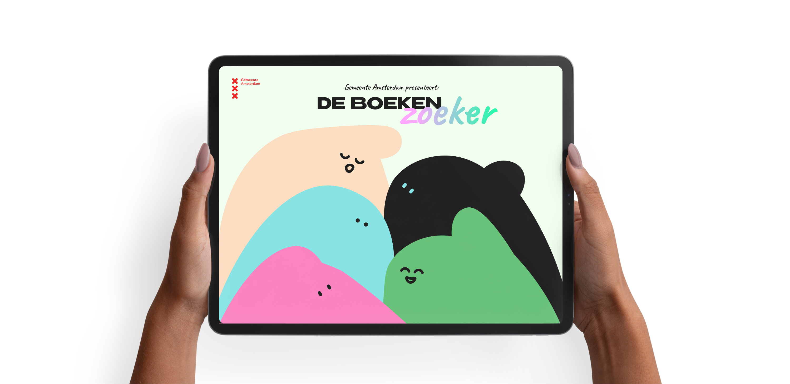
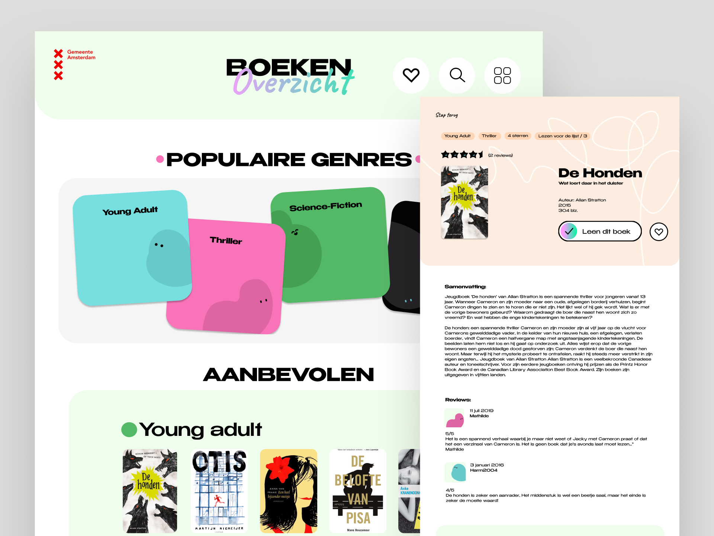
Visual Interface Design
- Role
- Visual interface design
- Audience
- High school students in Amsterdam
"De BoekenZoeker" for Municipality Amsterdam presents a visual user interface on an iPad, designed for high school students that allow them to easily browse and find interesting books to read in the school library.
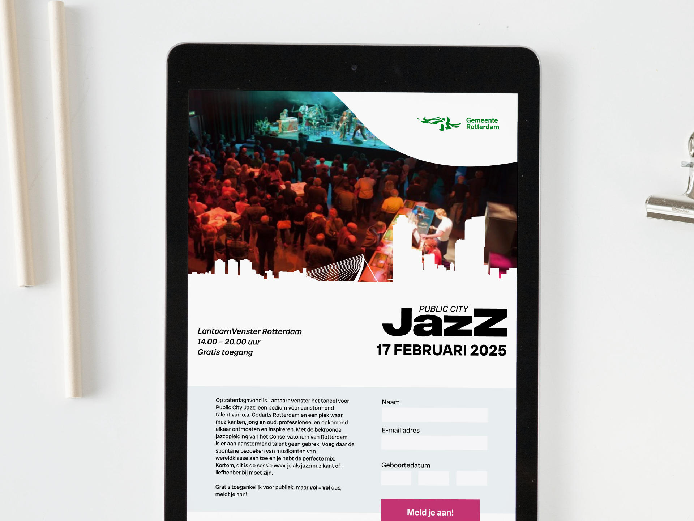
Public City Jazz
A responsive event platform for Public City Jazz, following the visual identity of the Municipality of Rotterdam. The focus was on layout, hierarchy, and translating the energy of jazz into a clear and structured interface across multiple screen sizes.
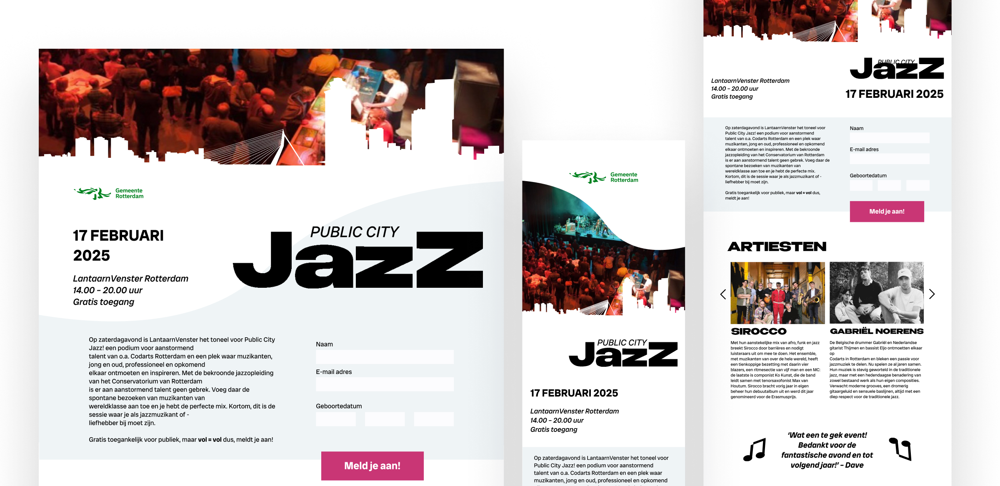
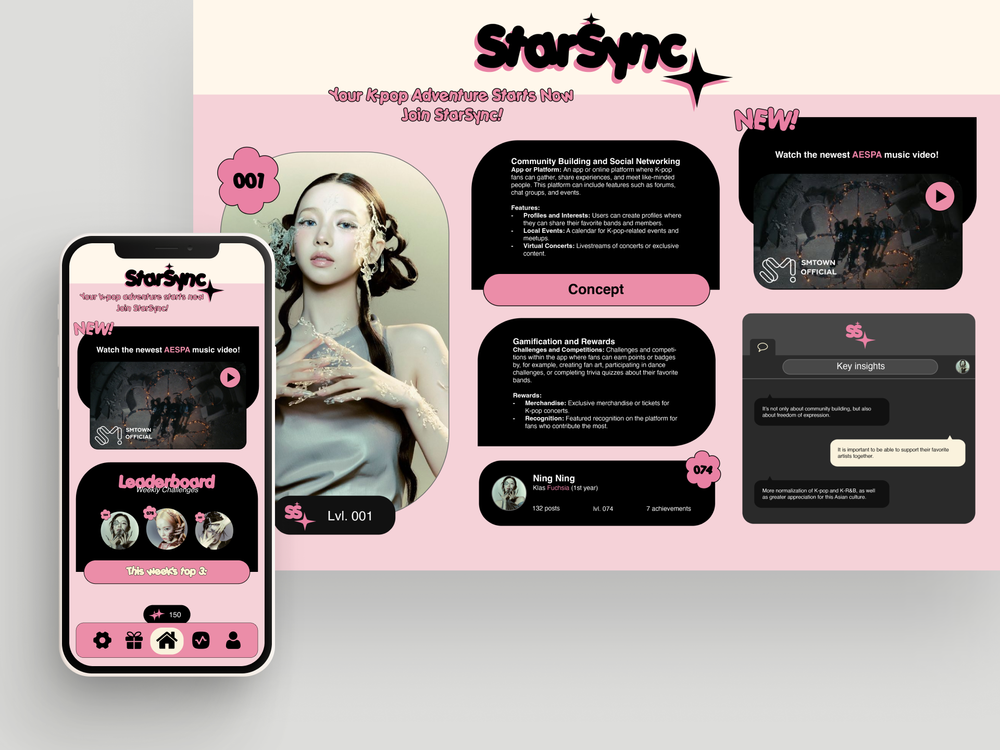
StarSync Community Application
A community app concept that co-creates a community within Communication and Multimedia Design students, celebrating individuality within the collective.
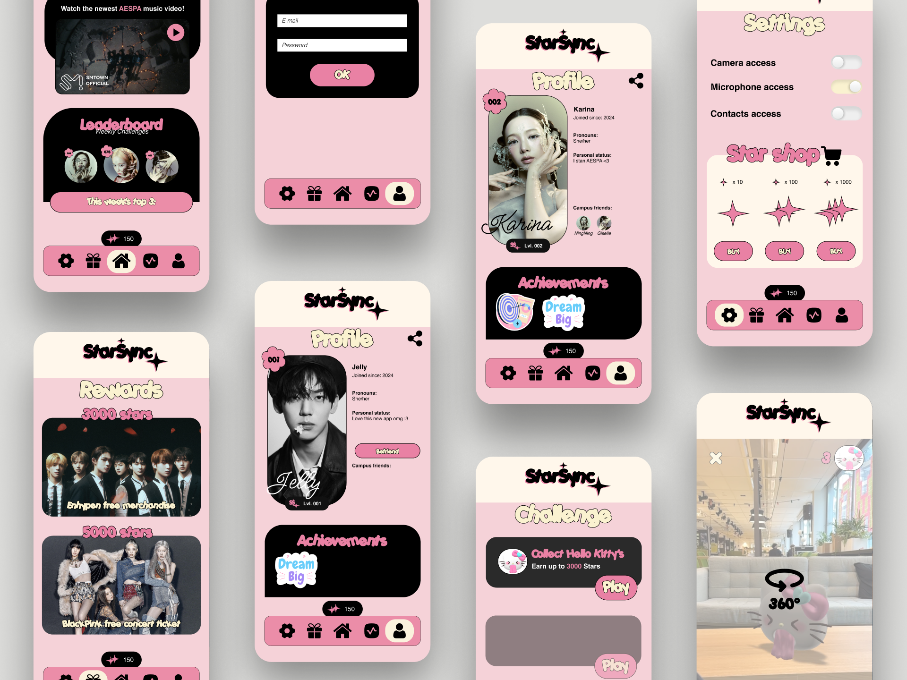
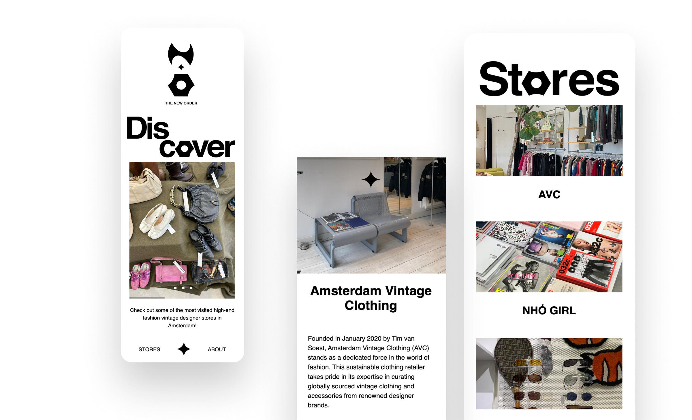

The New Order
The first HTML/CSS website with motives of sharing local high-end-vintage shops located in Amsterdam
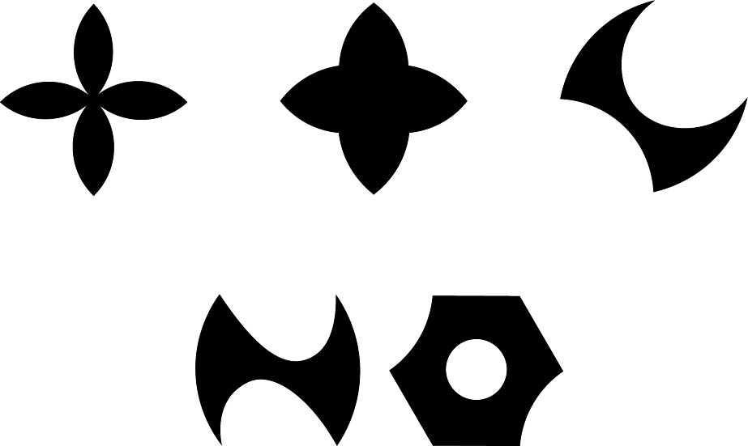